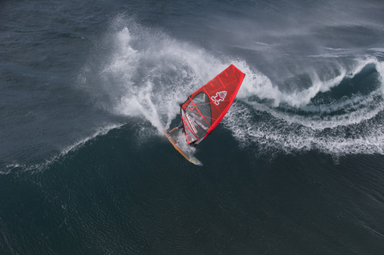
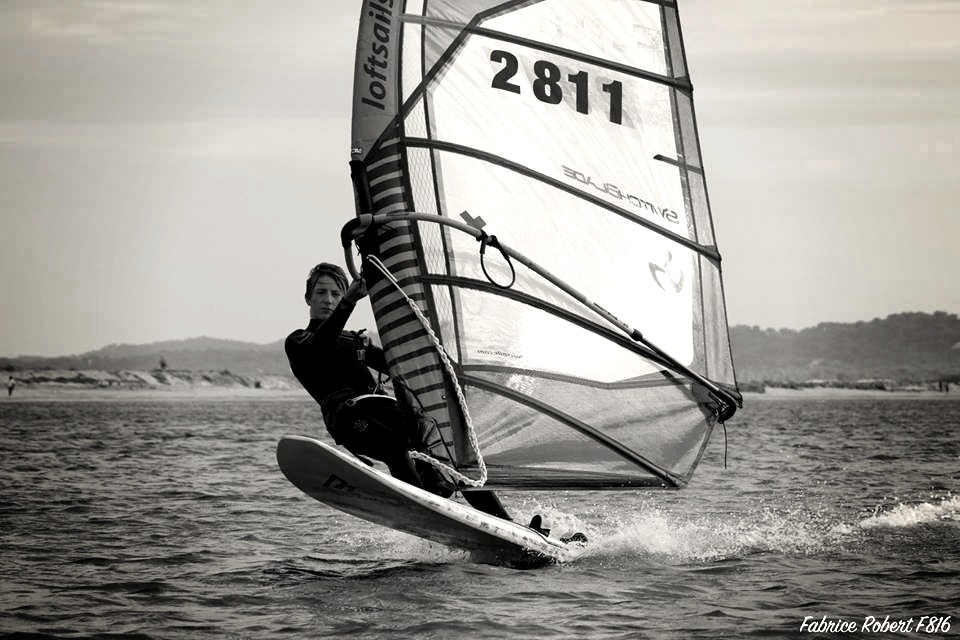
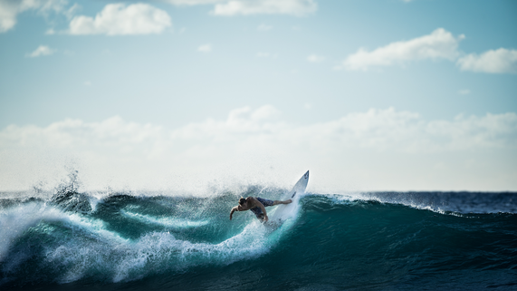

Antoine Porte
Je m'appelle Antoine, je suis en terminal s science de l'ingénieur. J'ai adheré a ce projet car je suis passioné par la voile plus particulierement le surf et le windsurf.
Se site serviras pour les prévisions de météo marine, afin que tout le monde puisse profiter des conditions pour aller naviguer.

Tom David
Je m'appelle Tom et je fais parti du projet du site de prévisions optimisé de conditions météos. J'ai tout de suite adhéré à cette idée car elle est en lien avec ma plus grande passion: la mer. J'apporte dans ce projet ma connaissance sur les conditions méteos en méditerranée ainsi qu'une connaissance de plusieurs spot varois. Je contribue aussi bien evidemment à la realisation et la programmation de ce site marins.

Louis-cyprien Godet
Je m'appelle Louis-cyprien Godet, j'ai 18 ans, je suis en terminal s science de l'ingénieur. Je me suis pris à l'idée de faire se site qui donne la météo marine car cela se rapporte à certaines de mes passions comme le surf ou le bateau. Etant investit dans les choses qui me plaisent je me donnerais à fond pour ce projet.
